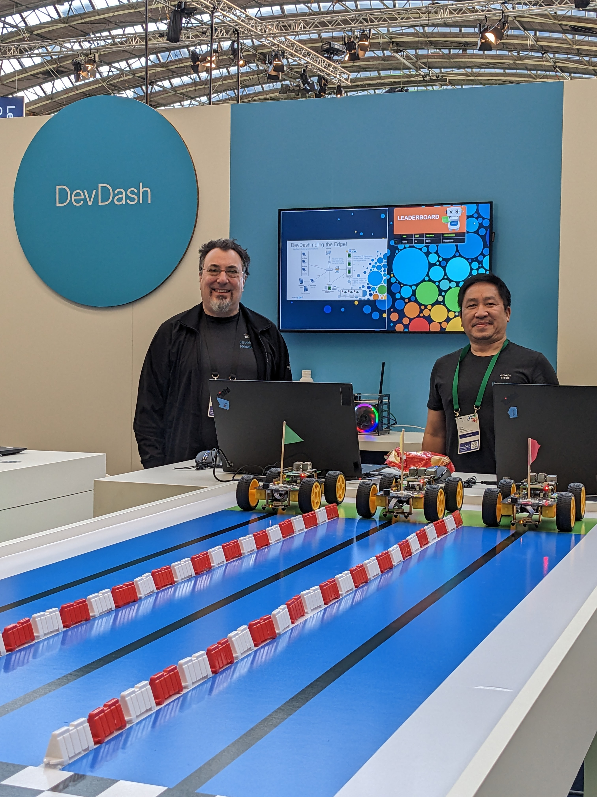

Developer Relations
Developer relations (DevRel) are the people who are bridge between the company they work for and the developers who use their tools and platforms. It combines elements of technical content creation, advocacy, support, and community building to enable developers to be successful.
DevRel is critical for fostering trust and collaboration between companies and developers. By providing great content, responsive support, and meaningful community engagement, DevRel enables developers to adopt and innovate with technology. It’s about building relationships, sharing knowledge, and creating an environment where developers can thrive.
Developer Content
I began my journey in DevRel with developer content. Transitioning from product documentation to developer-focused docs, I managed teams that created accessible and impactful resources. I led the implementation of advanced publishing systems, including a DITA-based XML system and a Git-based toolchain. My work earned the Chairman's Choice Award for contributions to the onePK project.

Developer Success
Leading the DevNet Developer Success team was an exciting challenge. My team supported partners, customers, and developers by answering support tickets and community posts. I implemented a ZenDesk CRM system to streamline ticket management and knowledge base authoring. During this time, I was part of the team that earned the Pioneer Award for our innovative DevNet Sandbox program.

Developer Community
My focus shifted to community engagement, where I ramped up activity on forums, expanded our presence at events, and fostered connections across third-party platforms. By creating engaging programs and content, I helped cultivate a vibrant developer community. See more details on my Community page.
Developer Advocacy
As Senior Manager of Developer Advocacy, I took on a strategic role, leveraging my experience in content, support, and community building. I led outreach efforts, organized events, and delivered workshops to strengthen connections with developers and drive innovation in the ecosystem.